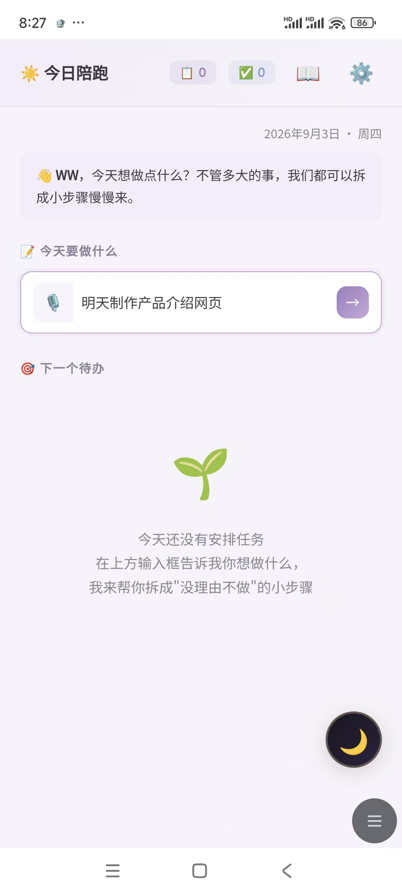
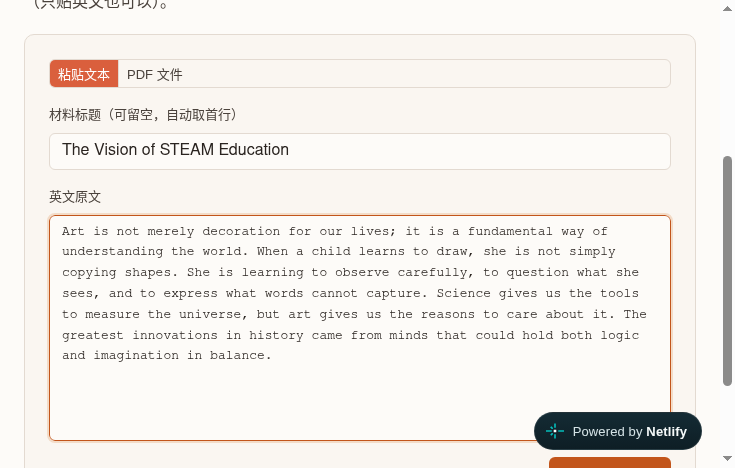
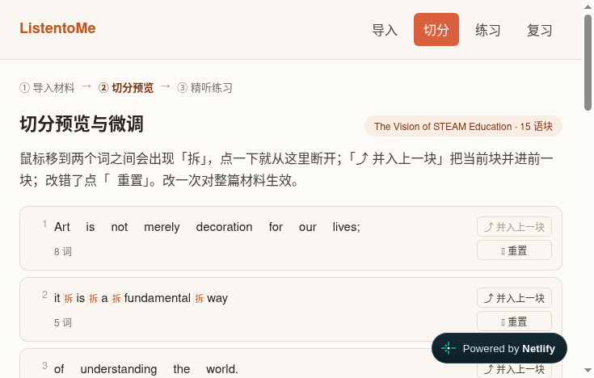
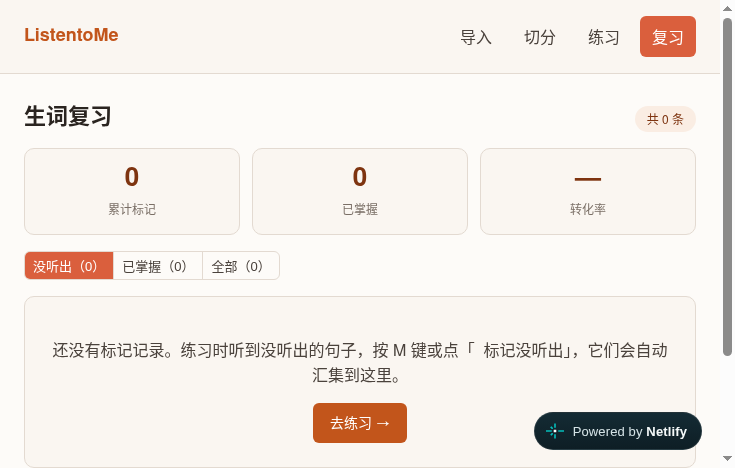

产品作品
四个作品，四种陪伴与连接的方式。


01
StepForward（步步向前）
AI 任务拆解 × 情绪陪伴 · 独立产品负责人 · 2026.07 – 至今
当你动不起来的时候，先接住你的情绪，再陪你慢慢启动。从 0 到 1 主导全流程，v1.0 → v2.2.8 持续迭代 20+ 版本。
- 多 Provider AI 架构，分场景匹配模型，单次拆解 token 实测降 40-60%
- 同一个 AI，五种人格：幕僚 / 好朋友 / 陪伴者 / 笔友 / 晚安疗愈师
- 安全边界：关键词硬编码 + AI 辅助识别，接入 3 条 24h 援助热线




① 导入文本 / PDF
② 切分语块可微调
③ 精听跟读评分
④ 复习续听不断
02
ListentoMe · 精听练习
把「听不懂」练成「听得懂」 · 独立产品人 · 2026.10 – 至今
导入任何英文材料，自动切成语块，一句一句地听、跟读、标记，直到真的听懂。左边是使用过程的完整演示。
- 精听闭环：导入 → 切分 → 精听 → 跟读评分 → 复习，跨会话自动续听
- 本地优先 + PWA 离线可用，PDF 本地解析不上传
- 零构建纯前端，localStorage 分版本 schema，MVP 冻结后按账本小步迭代

03
蟲鸣岛
中英双语 · 生态生活杂志站 · 2026.10
故事地图 × 商品 × 活动日历 × 订阅。「Behind every food is a place worth knowing.」
- Supabase 后台：管理员白名单 + RLS 行级权限
- 三级数据降级：缓存 → 数据库 → 本地 JSON，断网也有兜底
- 双语内容体系与纸感视觉设计（深绿 × 陶土）

04
小栖 · AI 陪伴机制演示
AI 陪伴机制的可玩演示 · 2026.09
把「AI 陪伴怎么做才安全」从论文式思考做成可以亲手玩的东西。
- L1-L4 响应路由：倾听 / 安抚 / 建议用户主权切换，L4 危机干预自动触发
- 事件化记忆：可删除、有反向链路；「结束对话 · 记忆轮」沉淀长期记忆
- 击穿拦截 + 成本估算 + 3 款换肤，Netlify Function 代理藏 Key